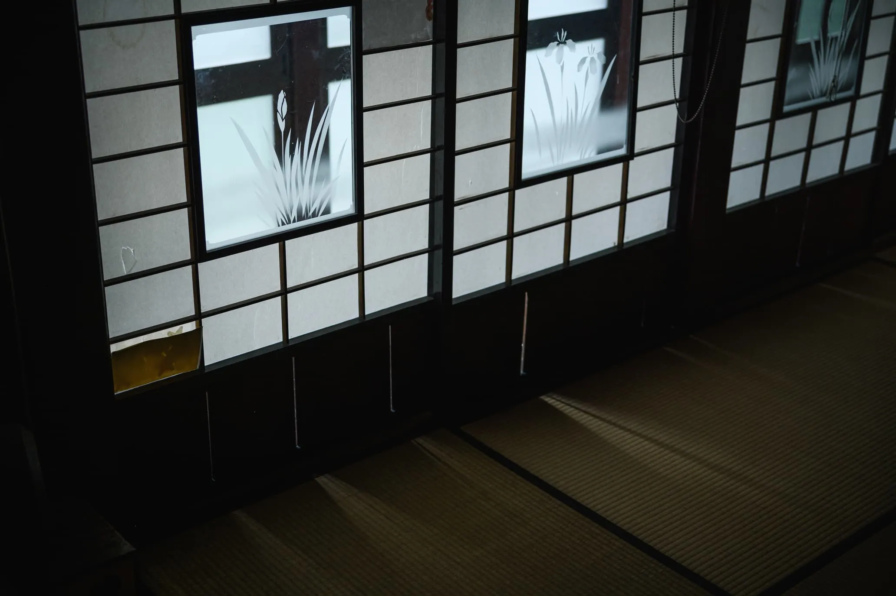
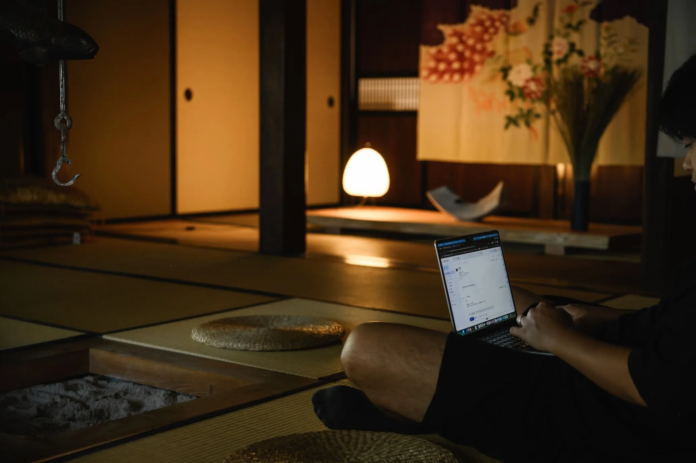
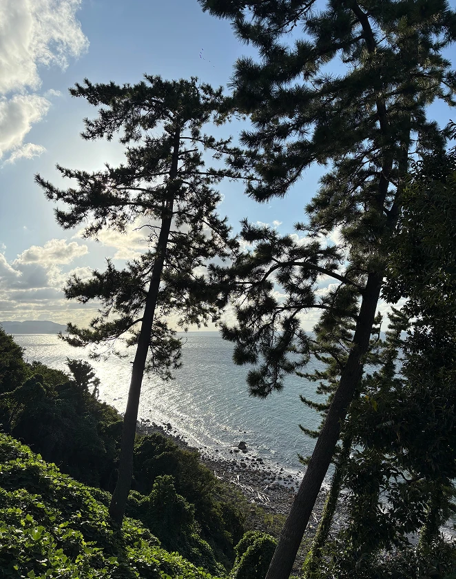
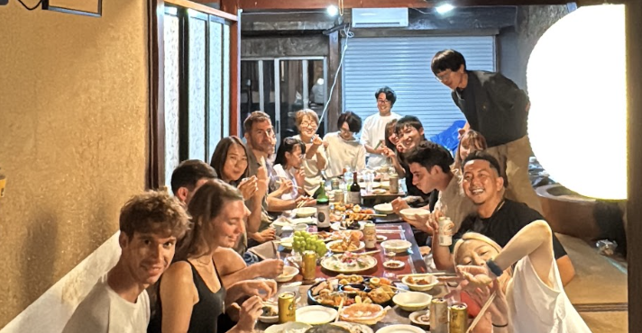
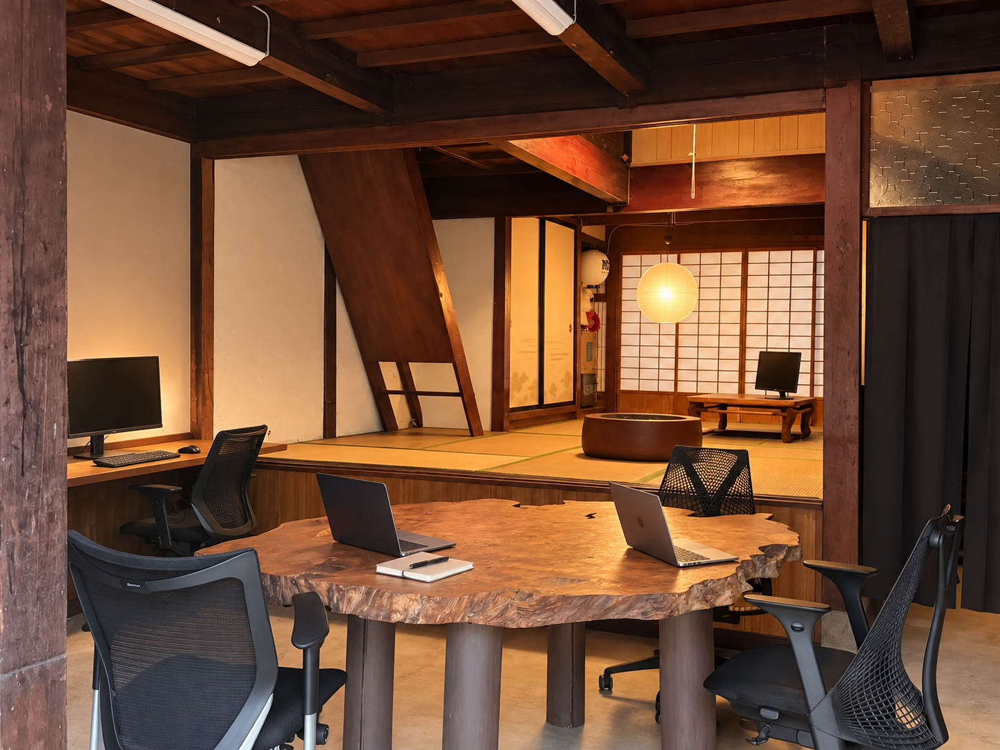
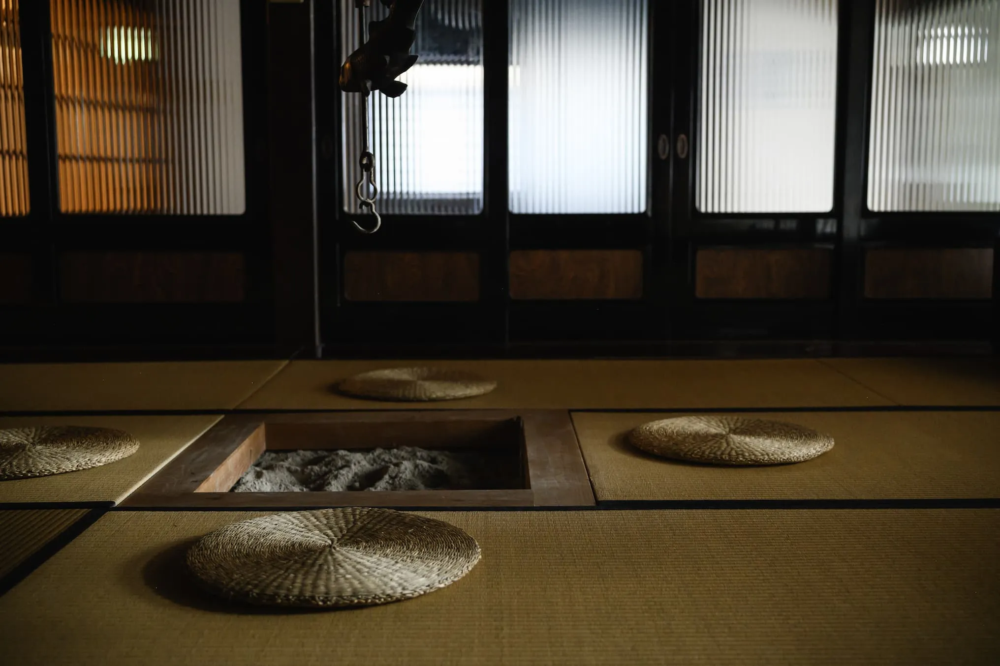
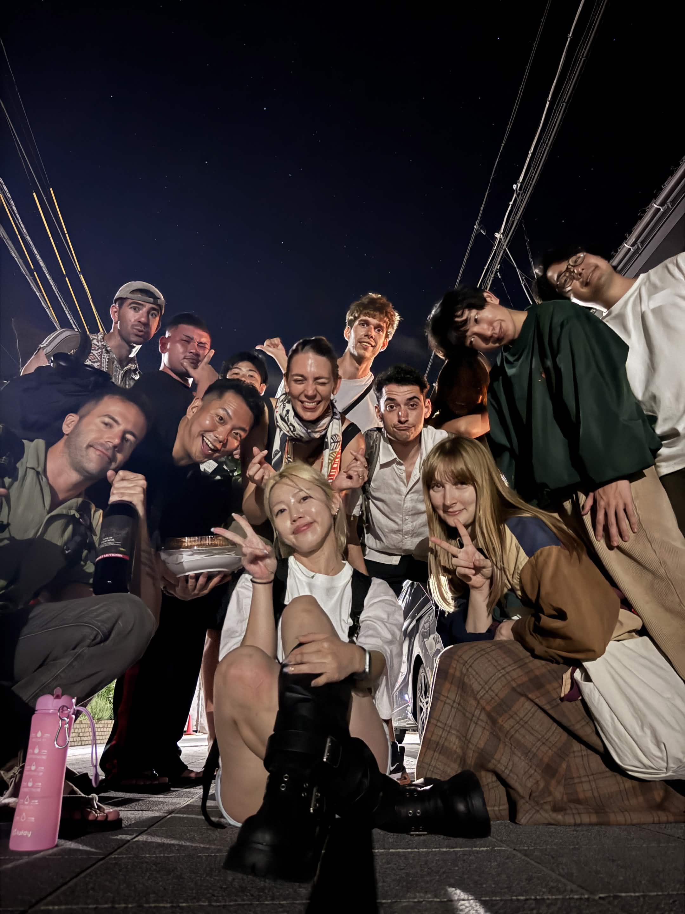

A closer look at Japanese culture.
Wood, paper, woven straw. Discover the quiet beauty of useful things and the care that keeps them alive—a way of seeing that resonates with mingei, Japan’s folk-craft tradition.

WINTER 2026 · NANAO, NOTO, JAPAN
A traditional home. A different rhythm.
Two weeks of work, local life, and fresh inspiration in Noto.
A selected-participant program, with a meaningful local contribution.
*Proposed dates; individual stays arranged together.
A CHANGE OF PLACE. A NEW WAY OF SEEING.
Step away from the familiar. Follow the light through shoji screens, share a table, and notice the beauty in everyday things. Bring your work or a creative practice—and leave space for what Noto might inspire.
01 / FIND YOUR INSPIRATION

Wood, paper, woven straw. Discover the quiet beauty of useful things and the care that keeps them alive—a way of seeing that resonates with mingei, Japan’s folk-craft tradition.

Noto’s winter is cold, and nature can be demanding. Explore its seasonal seafood and the everyday wisdom of people living with both nature’s gifts and its challenges.

Get to know fellow residents and people in the community. A shared meal or an unexpected conversation can become the beginning of your next idea.
Coastal and community photographs show previous moments in Noto, not a fixed winter itinerary.

SPACE TO SLOW DOWN & CREATE02 / YOUR PLACE TO FOCUS
A private room with Wi-Fi, and 24-hour access to a traditional-house coworking space. Settle into your own rhythm: focused work, time to explore, and room to connect.
Interior photographs show the traditional setting. Your room and arrangements will be confirmed individually.
03 / CARE FOR A PLACE. BECOME PART OF IT.

A home shaped by generations of everyday care.
Learn about Japanese living spaces through simple, hands-on maintenance—not construction work.
10–30 HOURS DURING YOUR STAY
Photography, film, design, writing, food, or a new idea. Work with local people on one concrete contribution that fits your experience and interests.
You do not need a finished proposal. We’ll agree on the scope, format and timing before confirming your participation, including how home-maintenance time fits into your commitment. Share a short reflection at the end.
Respect local privacy, cultural context and consent in all creative work.
COME WITH CURIOSITY
You don’t have to call yourself an artist.
Just bring curiosity, care, and something to share.

THE PEOPLE MAKE THE PLACE
A moment from a previous stay. Experiences vary with the season and local availability.
04 / WINTER FREE ACCOMMODATION PROGRAM
Three places remain.
Tell us what inspires you, what you can share,
and when you’d like to come.
BEFORE YOU APPLY
Complete the application with your preferred dates, experience and an idea for contributing locally. Interviews and decisions are arranged individually. Your contribution and stay arrangements will be agreed before confirmation.
Cold weather, a quieter pace, and a chance to get to know everyday life in Hokuriku. Bring warm clothing and discuss transport and work needs with us before booking. Outdoor activities depend on weather and local conditions.
No. The offer covers accommodation and coworking, not an all-inclusive tour. Food, travel and optional paid experiences are your responsibility. Photos are an introduction to Noto, not a promise of specific activities.
Companions and families require advance approval. Additional accommodation costs are quoted individually.
Please review the full terms and important information ↗, including cancellation arrangements, before applying. Contact us if anything is unclear.